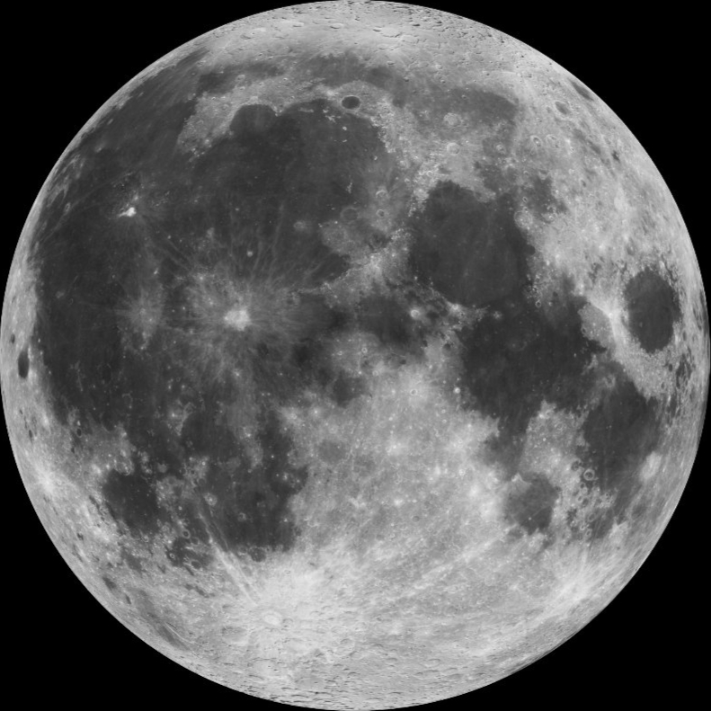
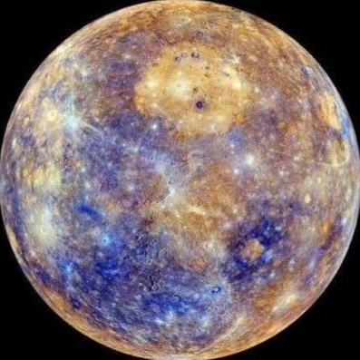
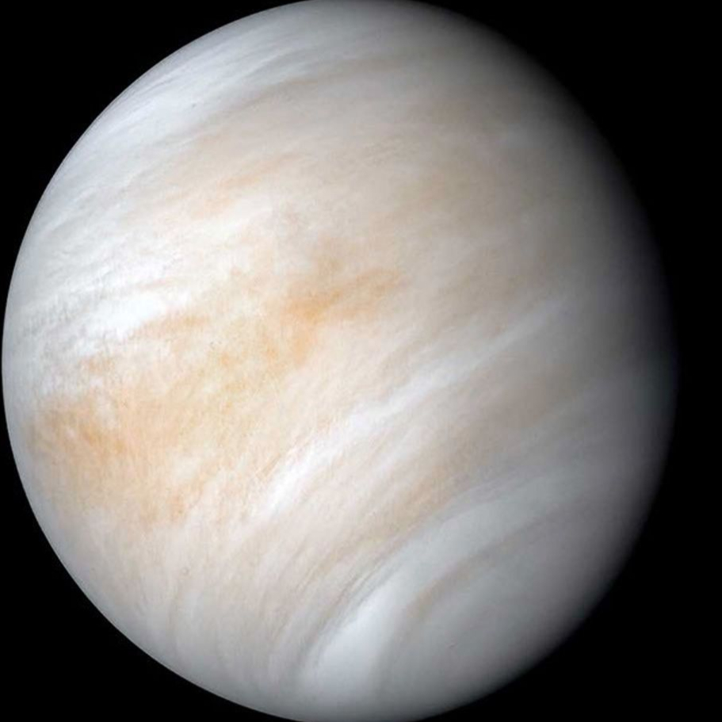
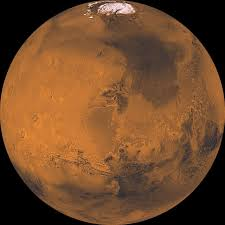
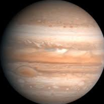
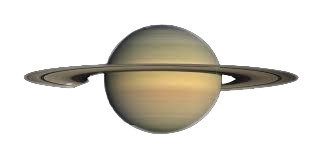
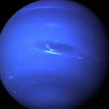
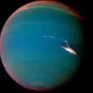

Where would you like to go?
Click below to find out everything you need to know
to decide your next
space destination
A vast, airless desert of charcoal-gray dust and ancient volcanic plains. Beyond its familiar
glow, it holds a history of cosmic violence and serves as a vital anchor for life on our own planet.
DISTANCE FROM EARTH
ESTIMATED TRAVEL TIME

the smallest planet in our solar system and the closest to the Sun, earning it a reputation as a
world of
extreme contradictions. It is a desolate, crater-scarred rock that looks remarkably
like Earth's
Moon
but hides a heavy, iron-rich interior.
DISTANCE FROM EARTH
ESTIMATED TRAVEL TIME

Earth’s Evil Twin. A world where the greenhouse effect has run wild, creating a hellish
landscape
that is the hottest place in the solar system. While it’s similar to Earth in size
and
structure,
its personality is purely toxic.
DISTANCE FROM EARTH
ESTIMATED TRAVEL TIME

The Red Planet. A cold, desert world of rust-hued dust and ancient secrets. Despite its
barren
appearance
today, recent discoveries as of 2026 suggest it was once a much more Earth-like world
with
tropical
rainfall and massive oceans.
DISTANCE FROM EARTH
ESTIMATED TRAVEL TIME

The "King of the Planets," a gargantuan gas giant so massive that it could contain more than
1,300
Earths. It is not just a planet, but a miniature solar system with 95 moons and a
complex,
high-energy environment.
DISTANCE FROM EARTH
ESTIMATED TRAVEL TIME

The "Jewel of the Solar System," famous for its dazzling rings and a density so low that the
entire
planet would float in a giant bathtub. While Jupiter is the King, Saturn is the artist,
defined
by
its
complex beauty and strange atmospheric phenomena.
DISTANCE FROM EARTH
ESTIMATED TRAVEL TIME

The solar system’s "Sideways Planet"—a pale cyan ice giant that refuses to follow the rules of
orbital
mechanics. Long dismissed as a boring cue ball, recent observations as of 2026 have revealed
it
to
be a
dynamic, storm-tossed world that smells distinctly like rotten eggs.
DISTANCE FROM EARTH
ESTIMATED TRAVEL TIME

Neptune is the solar system’s "Sentinel of the Abyss," the heavy-hitting enforcer patrolling
the
outer
docks. It leans on the Kuiper Belt with massive gravity, making sure icy "planet-killers"
stay
in
line
or get tossed out into the cold. Think of it as Earth's distant muscle—if a stray comet
tries to
move in
on our territory, Neptune is the one who makes sure it never reaches the front door.
DISTANCE FROM EARTH
ESTIMATED TRAVEL TIME
